VS Code Installation & Setup Guide
Install Visual Studio Code, connect it to Python, and configure the tools you use
VS Code Installation & Setup Guide
Install Visual Studio Code, connect it to Python, and configure the tools you use
Before You Begin
Visual Studio Code, usually called VS Code, is a code editor that brings the different tools you use for programming into one workspace.
This guide is for you if you:
- are using VS Code for the first time
- have installed Python and want to use it from VS Code
- are preparing for a programming or data science course
- are unsure which Python installation VS Code is using or
- want to configure VS Code for tools such as Jupyter, Pylint, pytest, Quarto, Git, or Markdown.
By the end of this guide, you will be able to:
- install VS Code
- understand the main parts of the VS Code interface
- open a project folder correctly
- connect VS Code to your Python installation
- create and run a Python script
- use the integrated terminal and
- configure the additional tools you need for your work.
Before you start
If Python is not installed yet, complete the Python Installation Guide first.
What Is VS Code?
One of the most important things to understand about VS Code is that it is a workspace, not the programming tools themselves.
For example, VS Code can help you work with:
- Python
- Jupyter notebooks
- Pylint
- pytest
- Quarto
- Git and
- Markdown.
But those tools do not all become part of VS Code simply because you install the editor.
Mental Model
Think of VS Code as your workspace.
Your files live on your computer. Python executes your Python code. Git tracks changes. Quarto renders documents. Other tools check, test, or display your work.
VS Code gives you one place to work with all of them.
This distinction is useful when troubleshooting. If something goes wrong, one of the first questions to ask is:
Which tool is actually producing the problem?
Install VS Code
Download VS Code
Go to the official Visual Studio Code website, https://code.visualstudio.com/Download, and download the version for your operating system.
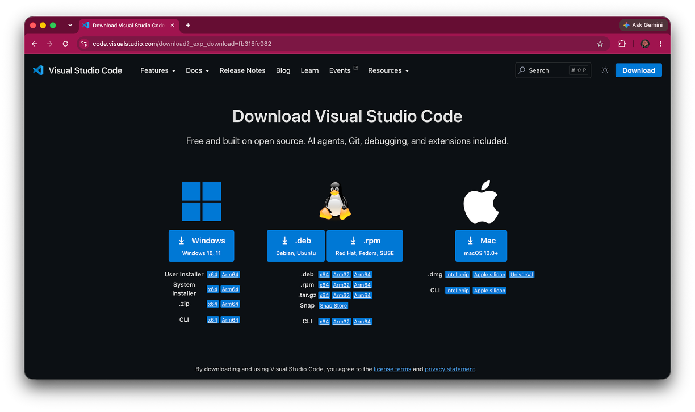
Avoid downloading from an advertisement, third-party download site, or an unfamiliar app store listing.
Download the recommended stable release
Choose the current VS Code release for your operating system.
Save the installer somewhere you can find it, such as your Downloads folder.
Install VS Code
Open the installer and follow the instructions for your operating system.
macOS
- Open the downloaded VS Code file.
- Drag Visual Studio Code into your Applications folder.
- Open VS Code from Applications, Launchpad, or Spotlight.
- Once you have confirmed that VS Code opens from Applications, you can remove the downloaded installer or disk image.
Common Mistake
Do not repeatedly open VS Code from your Downloads folder or directly from the downloaded installer.
On macOS, make sure Visual Studio Code has been moved into the Applications folder. This gives it a permanent location on your computer.
Windows
- Open the downloaded VS Code installer.
- Follow the installation prompts.
- Complete the installation before opening VS Code.
- After installation, open VS Code from the Start menu or its installed shortcut rather than reopening the downloaded installer.
Open VS Code
Launch Visual Studio Code.
You should see the Welcome screen.
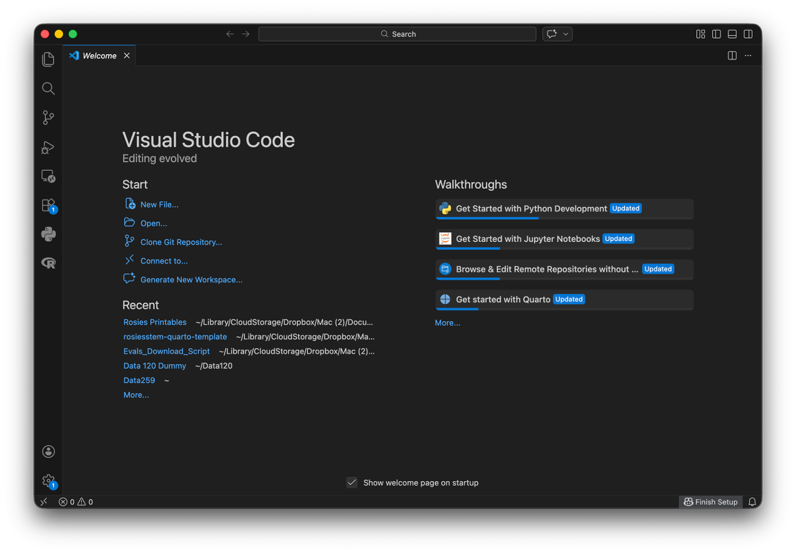
Get to Know Your Workspace
Before configuring anything, it helps to know the names of the major parts of VS Code.
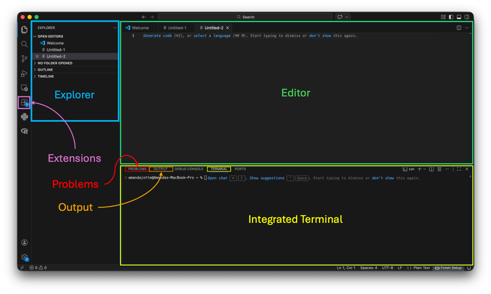
Explorer
The Explorer (blue in the image) shows the files and folders in your current project.
You can use it to create, open, rename, move, and organize files.
Editor
The editor (green in the image) is the main area where you write and edit your files.
Depending on the file, the editor might contain Python code, Markdown, a Quarto document, a Jupyter notebook, or another type of content.
Integrated Terminal
The terminal (yellow in the image) lets you run command-line tools without leaving VS Code.
You may use it to:
- run Python
- install packages
- run tests
- use Git
- render documents
- perform other project-related tasks
Extensions
Extensions (button to view highlighted in magenta in the image) add support for languages and tools that are not built directly into the basic editor.
You will install some of these later in this guide.
Problems and Output
The Problems and Output (red and orange respectively in the image) panels contain information from VS Code and its extensions.
When something goes wrong, notice where the message appears. A Python error, Pylint warning, failed pytest test, and VS Code extension error mean different things.
Open a Project Folder
One of the most useful VS Code habits is also one of the simplest:
Open the project folder, not just the file you want to edit.
Recommendation
Start by opening the folder containing your project. Then open individual files from the Explorer.
Opening the project folder gives VS Code context for your work. It helps VS Code understand:
- which files belong together
- where the terminal should start
- how relative file paths should behave
- whether the project is a Git repository
- which project-specific settings apply
Create a test project folder
Create a folder somewhere easy to find.
For example:
vscode-testOpen the folder
In VS Code, choose:
File → Open Folder
Select your vscode-test folder.
The folder name appears in the Explorer on the left side of VS Code.
Common Mistake
Opening a .py file by itself may make everything appear normal at first, but VS Code may not have the project context you expect.
When possible, open the project folder first.
Connect VS Code to Python
Installing VS Code does not install Python support automatically.
There are two separate pieces:
Python installation → Executes Python code
Python extension → Helps VS Code work with PythonYou need both.
Install the Python Extension
Open Extensions
Select the Extensions icon in the Activity (left side) Bar.
Find the Python extension
Search for:
PythonChoose the official Python extension published by Microsoft.
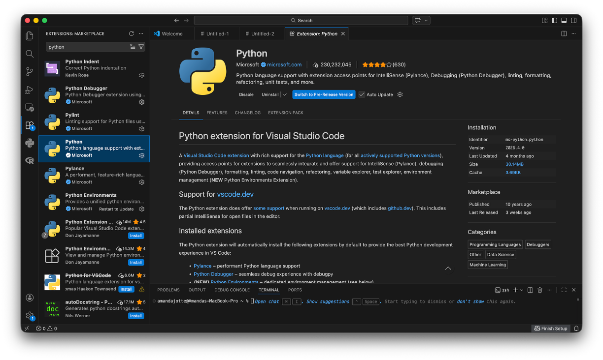
Install it
Select Install.
Restart or reload VS Code if prompted.
Common Mistake
Installing the Python extension does not install Python.
The extension allows VS Code to communicate with a Python installation that already exists on your computer.
Select Your Python Interpreter
Your computer may contain more than one Python installation or environment.
VS Code therefore needs to know:
Which Python should run this project?
Open the Command Palette
On macOS:
Command + Shift + POn Windows or Linux:
Ctrl + Shift + PSearch for:
Python: Select InterpreterChoose the Python environment you intend to use.
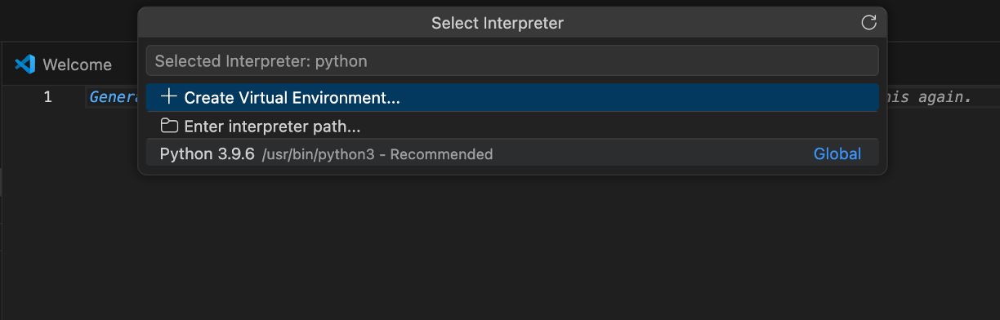
Best Practice
Check your interpreter before troubleshooting package problems.
A package can be installed successfully in one Python environment while VS Code is running your code with another.
Test Your Python Setup
Let’s verify that VS Code and Python are connected.
Create a Python file
In the Explorer, create:
hello.py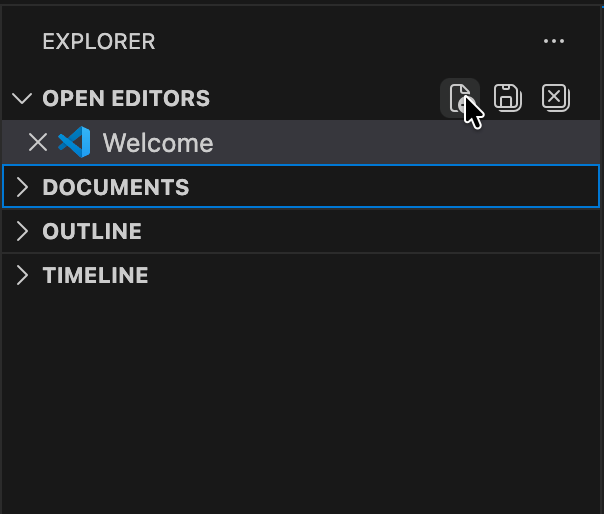
Add some Python
print("Python is running in VS Code!")Save the file using: File → Save
Run the file
Use Run Python File in VS Code.
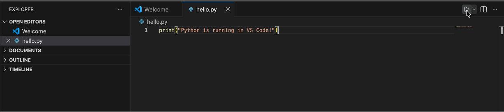
The integrated terminal opens and displays:
Python is running in VS Code!Use the Integrated Terminal
Open the terminal with:
Terminal → New Terminal
Because you opened a project folder, the terminal should normally begin inside that folder.
Check Python with:
python --versionor:
python3 --versionYou can also check which pip belongs to that Python installation:
python -m pip --versionor:
python3 -m pip --versionMental Model
The terminal is not a separate copy of your project.
It is another way of interacting with the files and tools on your computer. Its current working directory determines where commands are being run.
Set Up the Tools You Use
The rest of this guide is optional.
You do not need to configure every tool below.
Choose the sections that match the work you plan to do.
| If you will… | Set up… |
|---|---|
Work with .ipynb notebooks |
Jupyter |
| Receive automatic Python style feedback | Pylint |
| Write or run automated tests | pytest |
Work with .qmd documents |
Quarto |
| Work in Git repositories | Git Source Control |
Edit .md files |
Markdown Preview |
Jupyter Notebooks
If you work with .ipynb files, VS Code can provide a notebook interface directly inside your workspace.
Install the Jupyter Extension
Open Extensions and search for:
JupyterInstall the official Jupyter extension published by Microsoft.
Understand the Kernel
A Jupyter notebook needs a kernel to execute its code.
For a Python notebook, that kernel is connected to a Python environment.
Open a notebook in your project folder or create a new notebook in the same way you created a python file, except use the file extension .ipynb. Then, use the kernel selector to choose the Python environment you want.
Select Kernel → Python Environments → Choose your desired environment
You can run:
print("Jupyter is ready!")and see the output directly below the cell.
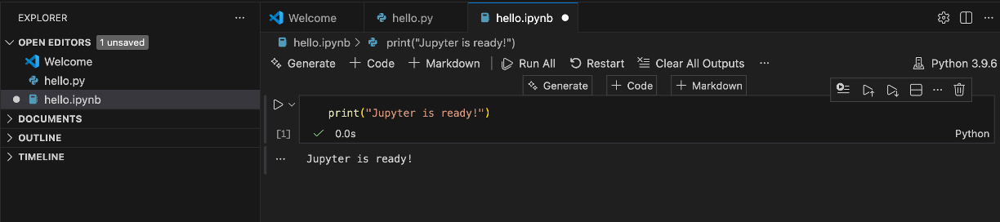
My notebook opens, but the cells will not run
Check the Jupyter extension and selected kernel before reinstalling Python.
Confirm that:
- the Python extension is installed,
- the Jupyter extension is installed and enabled,
- a Python kernel is selected, and
- the selected environment contains the packages you need.
If VS Code asks to install ipykernel, follow the prompt for the environment you intend to use.
Code Style Checking with Pylint
Pylint analyzes Python code and identifies potential problems with code quality and style.
It is important to understand what this means:
Pylint is a development tool.
Its purpose is not simply to assign penalties to your code.
It gives you feedback while you are writing so that you can identify potential problems before submitting or sharing your work.
Set Up Pylint
Open Extensions and search for:
PylintInstall the appropriate Pylint support for VS Code.
Depending on your setup, VS Code may also prompt you to install the pylint Python package into your selected environment.
Understand the Feedback
Pylint feedback may appear as:
- colored underlines in the editor
- messages when you hover over code
- entries in the Problems panel
Common Mistake
A Pylint warning is not necessarily a Python error.
Python may be able to run code that Pylint recommends changing.
Always identify whether you are looking at:
- a Python runtime error,
- a syntax error, or
- a linting/style message.
A separate Python style guide can explain the conventions themselves in more detail. Here, the goal is simply to make the feedback available while you work.
Testing with pytest
Tests let you check whether your code behaves the way you expect.
Like Pylint, pytest should not be thought of only as something an instructor or autograder uses.
Tests are feedback while you develop.
Running tests yourself lets you find problems earlier and determine whether a change accidentally broke something that previously worked.
Configure Python Tests
Open the Command Palette and search for:
Python: Configure TestsChoose:
pytestThen select the folder containing your tests when prompted. VS Code may also prompt you to install pytest in your Python environment if you haven’t already.
VS Code should discover tests that follow pytest’s expected naming conventions.
Run Tests
Open the Testing panel (click the icon that looks like an erlenmeyer flask on the left side panel).
From there, you can run:
- all tests,
- one test file, or
- an individual test.
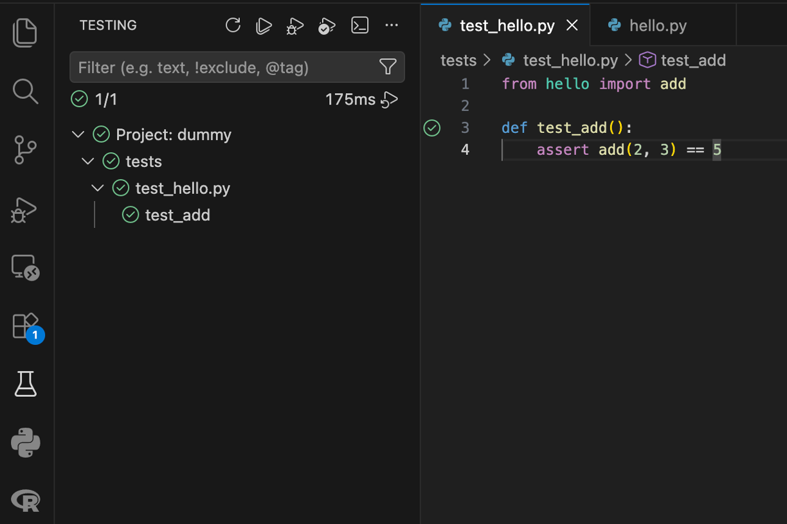
VS Code displays which tests passed and which tests failed.
Common Mistake
A failed test does not necessarily mean pytest is broken.
It usually means pytest successfully ran the test and discovered that the actual behavior did not match the expected behavior.
Read the failure output before changing your setup.
Quarto
If you write .qmd documents, VS Code can provide editor support for Quarto.
There are again two separate pieces:
Quarto installation → Renders Quarto documents
Quarto VS Code extension → Adds editor support inside VS CodeInstalling the extension does not install Quarto itself.
Install the Quarto Extension
Open Extensions and search for:
QuartoInstall the official Quarto extension.
Open a Quarto Document
Open a .qmd file from your project or create a new .qmd file.
VS Code should recognize it as a Quarto document and provide Quarto-specific editing features.
Preview the Document
Use Quarto’s preview functionality to render the document.
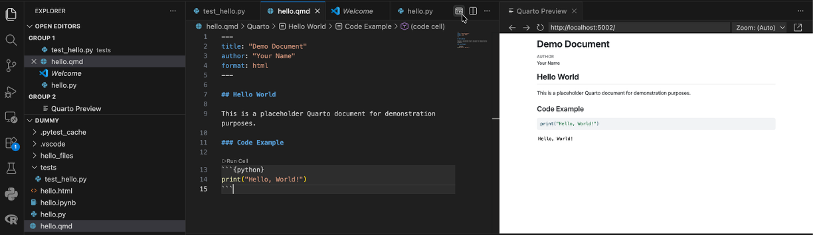
Your .qmd source renders into the requested output format and the preview opens successfully.
If Quarto itself is not installed, complete the Quarto Installation & Setup Guide.
For YAML, Markdown, code chunks, document formats, and the authoring workflow, continue to Getting Started with Quarto.
Git Source Control
VS Code includes a Source Control interface for working with Git repositories.
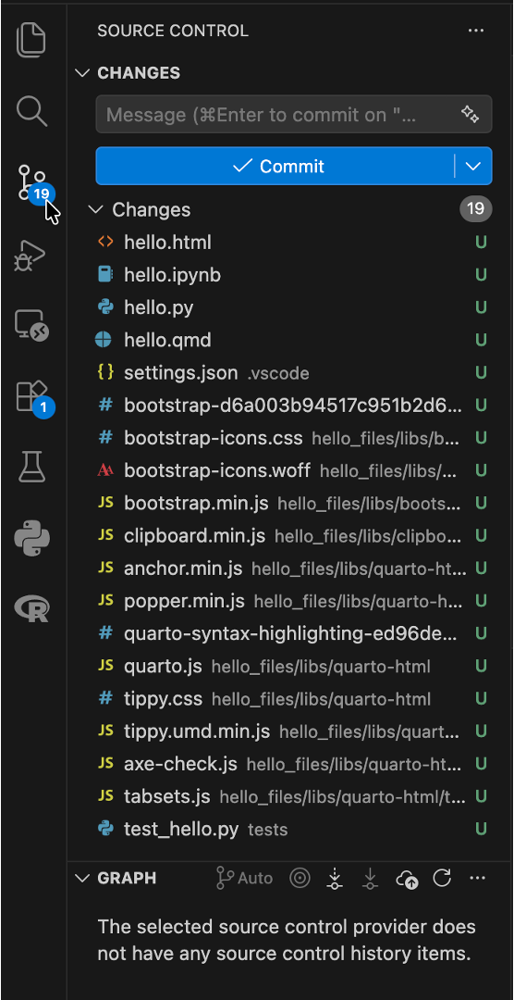
You do not need to learn Git from this section. The goal is simply to understand what you are seeing.
If you open a folder that is already a Git repository, the Source Control panel may show files as:
- modified (M)
- added (A)
- deleted (D) or
- untracked (U).
Those statuses come from Git.
VS Code is displaying Git’s information through a graphical interface.
Mental Model
Git performs the version control.
VS Code’s Source Control panel gives you an interface for interacting with Git.
They are related, but they are not the same thing.
If Git is not installed or you are ready to learn the workflow, continue with:
- Git Installation & Setup
- Git for Beginners
Those guides will cover repositories, commits, branches, pushing, pulling, and the larger Git workflow.
Markdown Preview
Markdown files use the .md extension and appear frequently in programming projects.
For example:
README.mdVS Code can display both the Markdown source and a rendered preview.
Open a Markdown file and use:
Open Preview
or:
Open Preview to the Side
in the upper right corner of the editor. (Placement may depend on other extensions you have installed.)
This is useful when writing:
- README files
- project documentation
- GitHub documentation
- Markdown that will later be used inside Quarto or other tools.
Best Practice
Use the preview to check how your Markdown will render rather than relying only on how the source looks in the editor.
Common Problems
VS Code cannot find Python
First confirm that Python works in a terminal, then select the interpreter manually.
Open the Command Palette and choose:
Python: Select InterpreterIf Python does not work in the terminal either, return to the Python Installation Guide.
A package installed, but VS Code still cannot import it
The package may have been installed into a different Python environment.
Check the interpreter selected in VS Code.
Then use that Python installation to run pip:
python -m pip install package-nameor:
python3 -m pip install package-nameMy terminal is in the wrong folder
Check whether you opened the project folder rather than an individual file.
The terminal has a current working directory. Opening the project folder before creating the terminal usually gives you the correct starting location.
I see colored underlines everywhere
Find out which tool produced them before trying to fix them.
Hover over the underline or open the Problems panel.
The message may come from:
- Python
- Pylint
- another extension or
- a language-specific tool.
The source of the message determines what it means.
Something worked yesterday but not today
Before reinstalling anything, check your project folder and selected Python environment.
Ask:
- Did I open the same project folder?
- Which Python interpreter is selected?
- Which notebook kernel is selected?
- Where is my terminal currently located?
- Did an extension become disabled or require an update?
Reinstalling software should usually come after these checks, not before them.
VS Code was installed, but now I can’t find it
First check whether VS Code was installed in a permanent location or whether you were previously opening it directly from the downloaded installer.
Why it happens
Sometimes VS Code appeared to be installed because it opened successfully, but the application was actually being launched from a temporary or downloaded location.
This is particularly easy to do on macOS if Visual Studio Code was opened from the downloaded disk image instead of being moved into the Applications folder.
Check
On macOS:
- Open the Applications folder.
- Look for Visual Studio Code.
- You can also use Spotlight (
Command + Space) and search forVisual Studio Code.
On Windows:
- Search the Start menu for Visual Studio Code.
- Check Settings → Apps → Installed apps to see whether VS Code is still installed.
Fix
If VS Code is not installed:
- Download it again from the official VS Code website.
- Install it completely.
- On macOS, make sure you move it into Applications.
- Open VS Code from its installed location rather than from the downloaded installer.
After restarting your computer, you can still find and launch VS Code from Applications on macOS or the Start menu on Windows.
Best Practices
- Open the project folder before opening individual files.
- Know which Python interpreter your project is using.
- Use the integrated terminal to keep your commands connected to your project.
- Install only the extensions you actually need.
- Treat linting and testing tools as feedback during development.
- Pay attention to which tool generated a warning or error.
- Preview Markdown and Quarto documents rather than judging them only from the source.
- Restart VS Code after major installation or extension changes.
- Copy the complete error message when asking for help.
Next Steps
Your VS Code workspace is now ready for the tools you use.
Depending on your work, continue with:
- Git Installation & Setup
- Git for Beginners
- Quarto Installation & Setup
- Getting Started with Quarto
- Jupyter Notebooks for Beginners
- Python Packages & Environments
- Python Style & Pylint
- Testing Python Code with pytest
You do not need to learn all of these at once. Choose the next guide based on the tools required for your course or project.
Verify Your Setup
You do not need every optional tool below.
Check only the tools you plan to use.
Core VS Code Setup
Optional Tools